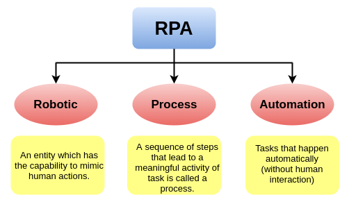

Social & Mobile
Mobile :
The first handheld cellular mobile phone was demonstrated byMartin Cooper and John F. Mitchell of Motorola in 1973. The first commercial automated cellular network (1G) was launched in Japan by Nippon Telegraph and Telephone in 1979.
1973: The First Cell Phone Is Invented.
1984: The First Portable Mobile Device.
1992: The First Smartphone.
1994: The Earliest Form of Smartphone Apps.
1997: The Start of Mobile Gaming.
2000: The First Camera Phone.
2001: Cell Phones Access the Internet.
2007: Apple Takes a Bite of the Smartphone Market.
2008: The First Android Smartphone.
2020: The Modern Smartphone.
Note: The first commercial version, Android 1.0, was released on September 23, 2008. The operating system is developed by Google .
Blockchain Technology
Blockchain : Blockchain is a method of recording information that makes it impossible or difficult for the system to be changed, hacked, or manipulated. It is a digital ledger of transactions maintained by a network of computers.
Every transaction in this ledger is authorized by the digital signature of the owner, which authenticates the transaction and safeguards it from tampering. Hence, the information the digital ledger contains is highly secure.

What is blockchain technology?
Blockchain technology is an advanced database mechanism that allows transparent information sharing within a business network. A blockchain database stores data in blocks that are linked together in a chain.
Note: In 1991 , researcher scientists named Stuart Haber and W. Scott Stornetta introduce Blockchain Technology.
Advantages of Blockchain Technology:
1) Open : It means anyone can become a participant in the contribution to blockchain technology, one does not require any permission from anybody to join.
2) Permanent : Records or information which is stored using blockchain technology is permanent means one needs not worry about losing the data.
3) Tighter Security : Blockchain uses hashing techniques to store each transaction on a block that is connected to each other so it has tighter security. It uses SHA 256 hashing technique for storing transactions.
Disadvantages of Blockchain Technology:
1) Scalability : It is one of the biggest drawbacks of blockchain technology as it cannot be scaled due to the fixed size of the block for storing information. The block size is 1 MB due to which it can hold only a couple of transactions on a single block.
2)Storage : Blockchain databases are stored on all the nodes of the network creates an issue with the storage, increasing number of transactions will require more storage.
3) Time-Consuming : To add the next block in the chain miners need to compute the values many times so this is a time-consuming process.
3D Printing/ Additive Manufacturing
3D printing or additive manufacturing is the construction of a three-dimensional object from a CAD (Computer-Aided Design) model or a digital 3D model. It can be done in a variety of processes in which material is deposited, joined or solidified under computer control, with the material being added together (such as plastics, liquids or powder grains being fused), typically layer by layer.
Note : The general concept of and procedure to be used in 3D-printing was first described by Murray Leinster in his 1945 short story “Things Pass By”:
RPA (Robotics Process Automation)
RPA stands for Robotic Process Automation. It is the technology used for software tools that automate human tasks, which are manual, rule-based, or repetitive. Typically, it is like a bot that performs such tasks at a much higher rate than a human alone. These RPA software bots never sleep and make zero mistakes, and can interact with in-house applications, websites, user portals, etc.

Cyber Security
Cybersecurity is the practice of protecting systems, computers, servers, mobile devices, electronic systems, networks, and data from malicious attacks or digital attacks. These cyberattacks are usually aimed at accessing, changing, or destroying sensitive information; extorting money from users via ransomware.
Malware :
Malware means malicious software. One of the most common cyber threats, malware is software that a cybercriminal or hacker has created to disrupt or damage a user’s computer.There are a number of different types of malware, including:
1) Virus : A computer virus is a kind of malicious computer program, which when executed, replicates itself and inserts its own code. When the replication is done, this code infects the other files and program present on your system.
2) Trojan horse :
A Trojan horse is a program downloaded and installed on a computer that appears harmless, but is, in fact, malicious. Unexpected changes to computer settings and unusual activity, even when the computer should be idle, are strong indications that a Trojan is residing on a computer.
Typically, the Trojan horse is hidden in an innocent-looking email attachment or free download. When the user clicks on the email attachment or downloads the free program, the malware hidden inside is transferred to the user's computing device. Once inside, the malicious code can execute whatever task the attacker designed it to carry out.
3) Spyware :Spyware is any software that installs itself on your computer and starts covertly monitoring your online behavior without your knowledge or permission. Spyware is a kind of malware that secretly gathers information about a person or organization and relays this data to other parties. In some cases, these may be advertisers or marketing data firms, which is why spyware is sometimes referred to as “adware.”
Spyware that steals your username, password or other credentials is referred to as a“keylogger” – an insidious prerequisite for cyber crime.
4)Ransomware :Ransomware is malware that encrypts a victim’s important files in demand of a payment (ransom) to restore access. If the ransom payment is made, ransomware victims receive a decryption key. Paying the ransom does not guarantee that the files will be recovered or the system restored.
5) Phishing : Phishing is the practice of sending fraudulent emails that resemble emails from reputable sources. The aim is to steal sensitive data like credit card numbers and login information.
Cyber safety tips - protect yourself against cyberattacks :
1. Update your software and operating system: This means you benefit from the latest security patches.
2. Use anti-virus software: Security solutions like Kaspersky Total Security will detect and removes threats. Keep your software updated for the best level of protection.
3. Use strong passwords: Ensure your passwords are not easily guessable.
4. Do not open email attachments from unknown senders: These could be infected with malware.
5. Do not click on links in emails from unknown senders or unfamiliar websites:This is a common way that malware is spread.
6. Avoid using unsecure WiFi networks in public places: Unsecure networks leave you vulnerable to man-in-the-middle attacks.
Some important points for Securing PC are:
1) Only use trusted sites when providing your personal information : Use the URL only "https://"
2) Always enable your firewall in your computer system.
3) Always install and updated anti-virus in your computer system.
4) Always use strong password and locks your system when the system is not in use.
5) Always keep your system software, drivers and other software updated.
Some important points for Securing Mobile are:
1) Always your install apps from App Store or Play Store, don't install from Internet.
2) Always use strong password and locks your mobile when the system is not in use.
3) Don't share to any one such as OTP, Passcode, Login Password etc.
4) Always use Two Factor authenticates.
5) Use only secure Wifi in public place's Wifi.